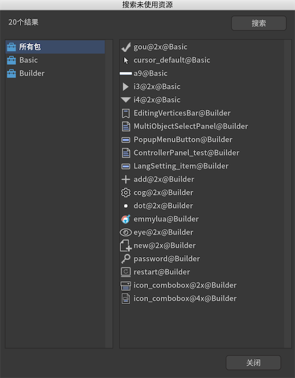
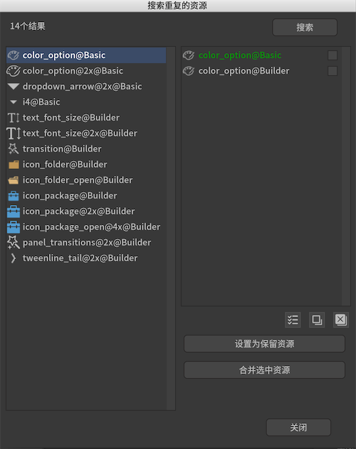

- 导读
- 编辑器使用基础
- 项目设置
- 包
- 分支
- 发布
- 元件
- 图片
- 动画
- 骨骼动画
- 图形
- 装载器
- 3D内容装载器
- 文本
- 富文本
- 输入文本
- 字体
- 组
- 组件
- 滚动容器
- 控制器
- 关联系统
- 标签
- 按钮
- 下拉框
- 进度条
- 滑动条
- 滚动条
- 列表
- 树
- Popup
- Drag&Drop
- 窗口系统
- 动效
- 适配
- 多国语言
- 导入和导出
- 偏好设置
- 颜色空间
- 插件
- 辅助工具
SDK
- LayaAir
- Egret
- Cocos2dx
- Cocos Creator
- Cry Engine
- ThreeJS
SDK - Unity
- 显示UI面板
- 坐标系统
- 纹理集的处理
- 字体的处理
- 输入处理
- 事件机制
- 插入模型/粒子/Spine/Canvas
- 曲面UI
- DrawCall优化
- 在Lua中使用
- 特色功能
- 常见问题
辅助工具
编辑器提供了一些使用的辅助工具。
查找未使用资源
从工具菜单进入。

右栏列出了当前项目中没有使用的资源。注意，如果一个资源，没有设置为导出，那么在其他包对它的引用是无效的。
查找重复的资源
从工具菜单进入。

左栏列出了当前项目中存在重复的资源的归纳，右栏是每组重复资源中包含的文件。判定文件是否相同的准则是文件内容完全相同，其他如修改时间、文件名、文件属性等的不同则忽略。
可以在右栏将同组的部分或全部文件合并为一个资源。合并为一个资源的意思是，假设现在有完全相同的A、B、C图片，它们分别在各个地方被引用，如果选定了A图片为保留资源（显示为绿色高亮），然后合并，则所有引用A、B、C的地方都会修改成因为A，然后B、C图片被删除。
发现错误或想贡献文档?
在 Github 上编辑此文档!